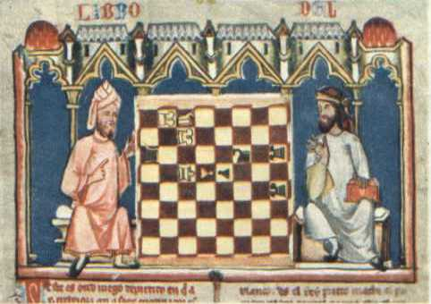
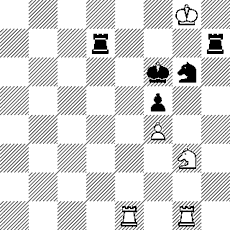
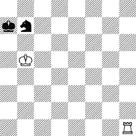
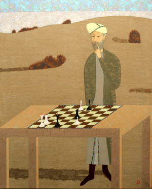

|
Авербах Ю.Л. Гроссмейстеры
средневековья. 9 стр
Через
двенадцать лет после смерти пророка Мухаммеда три арабских отряда по семь
тысяч пятьсот воинов в каждом вторглись через Сирийскую пустыню в
близлежащие земли. Так в седьмом веке нашей эры началась эпоха арабских
завоеваний. В течение двух десятилетий были покорены Сирия, Египет, Иран.
Арабские всадники вышли к Аму-Дарье, проникли на Кавказ. Следующие волны
завоевателей покорили северное побережье Африки, Испанию, Месопотамию,
Туркестан и часть Индии.
На
этой обширной территории, протянувшейся через Азию и Африку от Индийского
до Атлантического океана, образовалось могучее государство - Арабский халифат. Под
владычеством арабов оказались земли древних цивилизаций, высокой
многовековой культуры.
Арабы
были способными учениками. На основе усвоенных знаний древних они создали
собственную культуру. Появились замечательные сочинения арабских
математиков, географов, астрономов, историков. Вместе со сведениями из
медицины, астрономии и искусства арабы перенимают у персов и шахматы.
1. ПРАВО
НА ИГРУ
Шатрандж - таково арабское название
шахмат - стал в халифате популярной игрой. Правда, ему пришлось выдержать
жестокий бой за существование: ревнители веры пытались доказать, что игра
в шахматы противоречит исламу и должна быть запрещена вместе с костями и
нардами. Однако Мухаммеду шахматы были неизвестны, и потому в священной
книге - Коране - о них ничего не говорится. В конце концов,
толкователи Корана сошлись на следующем:
если игра не идёт на ставку, то правоверному мусульманину
играть в шахматы можно, однако не следует пользоваться фигурами
в виде людей и животных, так как Коран запрещает их любые
изображения. (И до сих пор? – Т.В.)
Поэтому
на смену персидским фигурам, которые в миниатюре изображали пешего воина,
всадника, слона, визиря и самого шаха, арабы создали абстрактные фигуры,
в которых трудно увидеть какие-либо живые образцы.
Эта своеобразная реформа облегчила распространение шатранджа среди
народа: такие фигуры были несложны в изготовлении и стоили недорого. В
отличие от Индии и Ирана, где шахматы были игрой царей, в халифате они
проникли в гущу народа. В шахматы играли и во дворцах и в хижинах, а то и
рядом с походным шатром кочевника. Поле для сражения порою вычерчивалось
прямо на земле, камни подходящей формы заменяли фигуры.
При широком распространении шахмат неизбежно появление выдающихся
шахматистов. И они появились. Чтобы разграничить игроков по силе, был
введён своеобразный табель о рангах из пяти ступеней, что-то вроде нашей
квалификационной системы. Самые сильные назывались алиями (большими). Это были первые гроссмейстеры. Халифы,
почитатели шахмат, старались заполучить непобедимых алиев ко двору,
устраивали между ними состязания.
2.
ШАХМАТЫ ПРИ ДВОРЕ ХАЛИФОВ
В
сказках «Тысячи и одной ночи»
прославляется мудрый и справедливый повелитель Харун ар-Рашид - тот
самый, что, прикрывшись плащом, под покровом ночи тайком выходил на улицы
Багдада навстречу необыкновенным приключениям. Увы, в действительности
халиф Харун ар-Рашид был жестоким и коварным деспотом. Он боялся даже
жить в Багдаде - слишком велико было недовольство его правлением.
Историки
утверждают, что легендарный халиф увлекался шахматами. Но документальных
подтверждений этого нет.
Впрочем,
сохранилось письмо Харуну ар-Рашиду от императора Византии, которое если
и не доказывает, что халиф играл в шахматы, то представляет любопытный
образец эпистолярного стиля того времени.
«От
Никифора, императора Византии,
Харуну, царю арабов.
Императрица, чей трон я наследовал, оценивала тебя, как
ладью, а себя считала пешкой и платила дань, которую тебе следовало
бы платить ей. Это происходило вследствие женской слабости
и глупости. Прочтя письмо, верни дань, которую ты получил, и
принеси ёе сам. Иначе меч решит наш спор».
Рассказывают,
что, получив послание, халиф оценил его «шахматное содержание», послал за
чернилами и на обратной стороне начертал:
«Во имя Аллаха всемогущего и милосердного! От Харуна, повелителя
правоверных, Никифору, византийской собаке! Я прочёл твоё письмо, сын
продажной женщины! Ответ ты не услышишь, а увидишь».
И
халиф сделал «ход конём» - арабская конница двинулась к границам
Византии. Запылали византийские города. Никифор понял, что он плохо
оценил позицию, признал себя «пешкой» и стал выплачивать арабам дань, как
и его предшественники.
Кто
фанатически был увлечён мудрой игрой, так это аль-Амин, один из сыновей и
наследник ар-Рашида. Во время правления аль-Амина во все концы
государства рассылались фирманы (указы) халифа, приглашавшие лучших
шахматистов ко двору повелителя правоверных. Он осыпал их подарками,
назначал им содержание и проводил счастливейшие часы своей жизни,
наблюдая за поединками - либо играя сам.
Недолго
длилась счастливая жизнь халифа. Его старший брат аль-Мамун собрал в
Иране войско и начал открытую борьбу за престол. Вскоре воины аль-Мамуна
осадили Багдад.
Современники
увековечили страсть халифа к шахматам следующей историей: в самый
критический момент сражения за город, когда схватка шла уже на крепостных
стенах, во дворец послали вестника, чтобы сообщить о смертельной опасности.
Ещё не остывший от жара битвы воин вбежал в покои халифа и застыл,
пораженный: халиф в глубоком раздумье сидел над шахматами.
- О
повелитель правоверных!- воскликнул вестник.- Молю тебя, поторопись.
Сейчас не время для игры. Опасность близка!
-
Терпение, мой друг, терпение,- ответствовал халиф, не отрывая взора от
фигур,- Я предвижу мат в несколько ходов!
Современники
умалчивают, чем кончилась эта партия, но, может быть, именно промедление
за игрой оказалось роковым. При попытке выбраться из города аль-Амин был
убит!
Аль-Мамун,
ставший халифом, получил известность как меценат, покровитель литературы,
науки и искусства. При нём развернулась широкая переводческая
деятельность, в результате которой творения знаменитых греческих мудрецов
стали известны арабским ученым. В Багдаде был учреждён специальный «дом
мудрости» с богатым собранием рукописей.
Стремился
аль-Мамун постичь премудрости шахмат, но они ему не давались, и успехи
халифа в игре были невелики. Этим объясняются слова грозного владыки:
-
Удивительно, что я правлю миром от Инда на востоке до Андалузии на западе
и не могу совладать с тридцатью двумя шахматными фигурками на
пространстве два локтя на два!
Современники
рассказывают, что придворные пытались нарочно проигрывать своему
повелителю, но, если он это замечал, хитрецу приходилось худо.
Аль-Мамун любил наблюдать за поединками сильных игроков. Во время похода
из Хоросана в Багдад в его присутствии проходили состязания трех
знаменитых алиев.
Как
рассказывают некоторые арабские историки, аль-Мамун пробовал свои силы в
поэзии. Однажды источником поэтического вдохновения ему послужили
шахматы.
Между
друзьями верными - квадратное поле ровное.
Без крови воскрешают на нём они воспоминания войны.
Один нападает, другой
защищается, длится упорная схватка -
Взгляните, с искусством каким без сигнала рожка
Всадники мчатся вперёд.
Часть
же историков считает, что на самом деле эти строки принадлежат поэту Али бен Джахму, который
сопровождал аль-Мамуна во время путешествия из Хоросана в Багдад и, может
быть, вместе с халифом наблюдал за состязанием трёх алиев.
Следующее
стихотворение - панегирик шахматам сочинил один из выдающихся поэтов
своего времени принц Ибн аль
Мутазз.
О ты,
кто с насмешкой циничной
Нами любимый шатрандж осуждаешь, -
Знай, что искусство игры есть наука.
Игра
эта горе забыть заставляет,
Влюблённых сердечные раны смягчает,
От пагубной страсти к вину отучает,
И воинам в искусстве сраженья советы даёт.
Наш
верный товарищ шатрандж
Всегда нам приходит на помощь,
Когда мы нуждаемся в нём.
Не приходится
сомневаться в том, что автор был искренним поклонником древней игры.
Поэту,
вероятно, не раз приходилось искать в шахматах забвенье от горестей
жизни: несмотря на высокое происхождение или, может быть, благодаря ему,
судьба Ибн аль Мутазза оказалась трагичной. Сын халифа, он стал поэтом,
халифом поэзии, но возмечтал о большем, пустился в интриги дворцовой
жизни, начал борьбу за власть, был провозглашен халифом Багдада... на один
день. Затем свергнут и казнён.
«Однодневным
халифом» звали его современники, и, возможно, крылатое выражение «халиф
на час» обязано своим появлением судьбе Ибн аль Мутазза.

3. НАД
АРАБСКИМИ РУКОПИСЯМИ
В
период расцвета арабской культуры было создано
множество литературных и научных
трудов. Толстые пергаментные тома в кожаных
переплётах занимали свои места в коллекциях
высшей знати, библиотеках
школ и университетов. О размерах
собраний говорит такой факт: в библиотеке
кордовского халифа Хакама II, жившего в X веке, хранилось
свыше четырёхсот тысяч манускриптов!
Но,
увы, от великого множества средневековых арабских рукописей сохранилась
ничтожная часть. Многие погибли, другие источены червями временем.
Впрочем,
даже о сохранившихся рукописях мы, к сожалению, не имеем еще полного
представления. Три года назад в Хайдарабаде
(Индия) я посетил бывший частный музей наваба Салар Джанга, одного из
последних представителей местной высшей знати. В музее много восточных
рукописей, в том числе и на арабском языке. Однако каталога ещё нет, и,
можно думать, немало ценных манускриптов безвестно пылится на полках.
Исследование
арабских рукописей, посвящённых шахматной игре, началось лишь в прошлом
веке. Одним из пионеров явился лондонский профессор восточных языков Дункан Форбс, который обследовал
несколько старинных рукописей, хранившихся в Британском музее и в
библиотеке Азиатского общества. Хотя только одна из них, самая древняя,
написанная в 1257 году, была на арабском языке, но и остальные, на
персидском, оказались переводом с арабского. Рукописи содержали обширный
материал, посвященный шатранджу: различные истории, связанные с
возникновением игры, правила теории дебютов, множество задач.
Результаты
своих работ Форбс изложил сначала в журнале «ИллюсУцейтед Ландан ньюс», а
в 1860 году издал монографию, посвященную истории шахмат.
Английский
профессор, между прочим, привёл любопытный факт. Как-то Вестминстерский
шахматный клуб посетили турецкий посол и его секретарь. Гости рассказали,
что в библиотеке турецкого султана в Константинополе хранится
несколько старинных трактатов о шахматах, в основном на арабском языке.
Дальше информации дело не пошло: в те времена дворец султана был вряд ли
доступен неверным. Но сообщение Форбса привлекло внимание немецкого
историка ван дер Линде, и тот
решил установить контакты в столице Оттоманской империи, чтобы разведать
что-нибудь о таинственных рукописях. На помощь пришла политическая
ситуация - началось сближение между Доблестной Портой и кайзеровской
Германией, в Константинополе появилось немецкое консульство. Ван дер
Линде завязал переписку с переводчиком консульства Паулем Шредером, и
тот, воспользовавшись своими связями, сумел получить доступ к
книгохранилищам. В Константинополе нашлось семь древних рукописей, посвященных шахматам. Самый старый
экземпляр оказался в библиотеке султана.
Уникальная
рукопись - датирована 1140 годом, но это - копия гораздо более давних
манускриптов. На её богато разукрашенном титульном листе по голубому фону
сверкали золотом буквы старинного куфического письма: «Книга о шахматах,
выдержки из трудов аль-Адли, ас-Сули и других». Вот они, имена древних
гроссмейстеров!
Нужно
ли говорить, насколько находки Шредера обрадовали ван дер Линде. В своей
работе «Источники к истории
шахматной игры» он описал эти рукописи и подверг их обстоятельному
изучению, а скромного переводчика назвал «Колумбом арабской шахматной
литературы» и посвятил ему свой труд.
В
начале нашего века английский исследователь Гарольд Мэррей опубликовал фундаментальную «Историю шахмат», в которой
большое место уделил исследованию арабских рукописей.
Мэррею
удалось просмотреть около 30 старинных манускриптов. Одни он держал в
руках, с других смог получить фотокопии.
Сличая
различные рукописи, Мэррей установил, что они, хотя находились в разных
местах и писались в разное время, очень похожи друг на друга по форме и,
главное, по содержанию. Нетрудно догадаться, что эти рукописи -
компиляции, собранные из одних и тех же более ранних источников.
Рассказывая
истории об изобретении шахмат, давая сравнительные оценки фигур, приводя
наиболее целесообразные дебютные построения и показывая решения задач,
авторы манускриптов для пущего авторитета часто подкрепляли свои
высказывания словами «аль-Адли сказал» или «как считает ас-Сули».
Работы
аль-Адли и ас-Сули и являются этими более ранними источниками. Старинная
рукопись XII века, о которой мы уже рассказывали, прямо на них указывает.
4.
КТО ТАКОЙ АЛЬ-АДЛИ?
К
сожалению, оригиналы трудов арабских шахматистов прошлого оказались
утерянными. Но то, что они существовали, бесспорно. В конце X века была
создана обширная библиография арабской литературы. И среди сочинений по
истории, географии, теологии и т. п. упоминались и трактаты о шахматах.
Вот что было сказано:
Аль-Адли. Его имя (пропуск). Он
написал книгу о шахматах. Он также написал трактат о нардах.
Ар-Рази. Его имя (пропуск). По силе он
равен аль-Адли. Оба играли пере Мутаваккилом (был халифом с
847 по 862 гг.). Его книга «Элегантность в шахматах».
Ac-Сули. Абу-Бахр-Мухаммед бен Яхий,
который уже упоминался. Написал (первую книгу) и трактат о шахматах
(вторую книгу).
Как
видите, названо уже три шахматиста. Кто же они, эти люди? Об
аль-Адли известно крайне мало. Автор библиографии не знал даже его
полного имени. Однако в каталоге библиотеки султана
Абдул-Гамида II, составленном уже в двадцатом веке, это имя есть.
Абал-Аббас Ахмед аль-Адли.
В
другой классической библиографии Хаджи Калифа (XVII век) также есть
короткое упоминание о шахматных книгах и их авторах. Вместо аль-Адли
автором трактата о шахматах там назван знаменитый врач ас-Серакси, полное имя которого
Абал-Аббас Ахмед бен Мухаммед ас-Серакси. Первые три слова в полном
имени, действительно, схожи. Мэррей, правда, считает, что отождествлять
аль-Адли и ас-Серакси нельзя, однако его вывод оспаривается.
Для нас упоминание ас-Серакси интересно не только потому, что он был
известной фигурой в медицине, ас-Серакси значит буквально - выходец из
Серакса, города в Средней Азии, расположенного в пределах Туркменской
ССР, а это ещё раз подтверждает, что в Средней Азии шахматы были в те
времена уже хорошо известны и популярны, и среди жителей Средней Азии
было немало сильных шахматистов.
То,
что аль-Адли пытаются отождествлять с одним из выдающихся учёных того
времени, весьма показательно: действительно, подобную работу мог написать
только человек большой культуры, обладающий многосторонними знаниями.
Прочтите,
например, отрывок из его трактата о шахматах: «И эту игру персы
заимствовали у индийцев, а мы, в свою очередь, взяли ее у персов. Персы
изменили некоторые правила, что встретило одобрение. Всем известно, что
три вещи ведут свое происхождение из Индии, и что-нибудь похожее не
существовало нигде. Это - книга Калила и Димна; девять цифр, при помощи
которых можно считать до бесконечности - и шахматы. Приоритет
индусов в астрологии и медицине оспаривается персами и греками».
Об
ар-Рази, с которым мы познакомились в арабской библиографии, известно еще
меньше, чем об аль-Адли. Делались попытки отождествить этого шахматиста с
выдающимся ученым-медиком Мухаммедом Захария ар-Рази. Однако общее у них
только то, что оба - земляки, выходцы из Рея, города в Иране. Учёный жил
позднее, чем шахматист.
5.
АС-СУЛИ, ВЕЛИКИЙ И ЕДИНСТВЕННЫЙ
Автор
библиографии X века, называя имя ас-Сули в разделе шахмат, подчеркивает,
что оно уже упоминалось раньше. О его сочинениях говорится в разделах,
где перечисляются книги по истории и литературе.
Ac-Сули
был многогранной личностью с энциклопедическими познаниями. Учёный-историк,
он написал историю дома Аббасидов, способный поэт, он посвятил ряд
сочинений истории арабской поэзии. Некоторые работы ас-Сули
дошли до нашего времени и хранятся в библиотеках Запада и Востока. Есть
они и у нас. Еще в прошлом веке манускрипт ас-Сули был обнаружен учёным-арабистом
В. Розеном в Публичной библиотеке Санкт-Петербурга.
Своим
именем ас-Сули обязан области Сул, выходцами из которой были его
родители. Эта область расположена к юго-востоку от Каспийского моря в
бассейне реки Атрек. Сейчас по этой реке частично проходит
государственная граница между Советским Союзом и Ираном. Может быть,
предки ас-Сули жили на территории нынешней Туркменской ССР.
Выдвинулся
ас-Сули в ряды алиев в начале X века, при халифе аль-Муктади. Ар-Рази был
тогда уже мёртв, а место придворного шахматиста занимал некий аль-Маварди, любимец халифа.
Когда халифу сообщили о выдающихся шахматных способностях ас-Сули, он
приказал устроить состязание между ним и аль-Маварди.
Поединок
состоялся во дворце в присутствии халифа и придворных. Как зритель
повелитель правоверных проявил себя с самой худшей стороны, он выкриками
вслух подбадривал своего любимца, точно нынешний футбольный болельщик на
стадионе.
Сначала
это мешало ас-Сули сосредоточиться, но затем он увлекся, перестал
обращать внимание на невыдержанного халифа и начал выигрывать партию за
партией. Всем стало ясно, что он намного превосходит своего противника.
Халифы переменчивы. Ал-Муктади потерял всякий интерес к поверженному
аль-Манаряи и прогнал его, ещё сострив на прощание: «Твоя
розовая вода (мавард по-арабски) стала мочой!»
Ac-Сули
был приближен ко двору. Неизвестно, как часто ему приходилось отстаивать
звание алия, но сохранить свое положение ему удалось и при следующих
халифах.
Историк
аль-Масуди привёл любопытный эпизод, показывающий, как высоко ценили
владыки Багдада выдающегося шахматиста: «...Как-то халиф ар-Ради во время
прогулки, показывая на чудесный цветник, обратился к своим приближенным: -
Видели ли вы что-нибудь прекраснее?
Придворные
начали на все лады хором восхвалять цветник, ставя его выше всех чудес
мира.
-
Хватит! - воскликнул халиф. - Несмотря на все ваши хвалебные слова,
искусство ас-Сули в шахматах меня восхищает больше».
Шахматная
слава дала ас-Сули прозвище аш-Шатранджи
(шахматист), его называли и ан-Надим (придворный), по-видимому, за уменье
ориентироваться в сложной и полной интриг обстановке при дворе.
И все
же после смерти ар-Ради, уже на склоне лет, он попал в немилость, был
вынужден бежать из Багдада и скрывался в Басре, где вскоре умер в нищете.
Шахматная слава ас-Сули свыше шестисот лет держалась на Востоке. Ему
приписывали изобретение шахмат, он стал легендарной фигурой. Его биограф
бен Каликан сказал:
«В
своё время он был единственным. Не было никого, кто мог равняться с ним в
шахматном искусстве. Сила его игры вошла в поговорку. Упоминая о
ком-нибудь, кто отлично играет, говорят: он играет, как ас-Сули». (Чем ни
один из первых чемпионов мира? – Т.В.)
По
отрывкам из трудов ас-Сули можно составить высокое мнение о нем как о
шахматном мастере. Он критически подходил к суждениям своего
предшественника аль-Адли, вносил исправления в оценки некоторых позиций,
давал новые решения, улучшал старые.
Ac-Сули
был первым шахматистом, пытавшимся найти и сформулировать принципы и
законы игры.
6.
ПОЗИЦИИ ТЫСЯЧЕЛЕТНЕЙ ДАВНОСТИ
Правила
шатранджа были иными, чем в современных шахматах. Ферзь двигался только
по диагонали и всего на одно поле, слон мог перепрыгивать через фигуры
как конь, но передвигался только на два поля вперед. Не было рокировки и
права двойного хода пешкой. Поэтому теория шатранджа, которой полны
старинные манускрипты, для нас мертва.
И все
же король, ладья и конь движутся сейчас по тем же правилам, что и
тысячу лет назад, поэтому позиции шатранджа с этими фигурами для нас
по-прежнему интересны. По ним виден уровень знаний лучших шахматистов
того времени, правильность оценок и точность анализа — короче говоря, всё
то, что составляет мастерство.

ДИАГРАММА 1
Задача
составлена по классическим правилам композиции шатранджа. Король белых в
кольце чёрных фигур, и мат грозит со всех сторон. Тем парадоксальнее
неожиданный финал - белые дают мат в три хода: 1.Кh5+! Л : h5 2. Л:g6+
Kp:g6 3. Ле6 - мат!
Не
будем слишком строги к авторам задачи. По современным канонам композиции
- решение грубое, форсированное, начинается с шаха. Однако матовый финал,
выполненный минимальными средствами, выглядит изящно.
Позиция
на диаграмме № 2 - классический пример современного эндшпиля - также из
трактата аль-Адли.
Аль-Адли
даёт оценку позиции - белые выигрывают, и в качестве доказательства
приводит следующий вариант:

ДИАГРАММА 2
1.
Лh5 Крb8 2. Крсб
Kd8+ 3. Kpd7 Kb7 4. ЛЬ5 Кра7 5. Крс7,
и конь пойман.
Ничего
не скажешь, решение чёткое и изящное! Единственный недостаток — оно
слишком кратко. Следовало рассмотреть, например, ход 1... Kd6+. Белые
добивались победы и в этом случае, но на их пути были большие трудности.
Однако даже в современных трудах по шахматам авторы не ставят задачу
исчерпать все варианты, а приводят наиболее характерные и поучительные.
Ac-Сули
согласен с оценкой аль-Адли, но предпочитает другой путь к цели: 1. Ла1+
Крb8 2. Kpc6 Kd8+ 3. Kpd7 Kb7 4. ЛаЗ Кс5+ 5. Крсб Кеб 6. Ла5! Кс7 7. Ле5
Каб 8. Ле8+, и чёрные могут сложить оружие, так как на 8... Кра7 следует
9. Ле7+ и 10. Крbб.
Кто же
прав? Оказывается, оба!
Современная
теория учит, что с ладьей против коня выиграть нельзя. Однако существует
несколько исключительных позиций, где победа возможна. К ним принадлежит
и эта. Чёрных губит неудачное расположение коня.
Позиция
№ 2 - не этюд в современном смысле слова: к цели здесь ведёт много путей,
в том числе и указанные арабскими шахматистами. Какой из них лучше, дело
вкуса. Мне больше нравится решение аль-Адли, демонстрирующее план поимки
коня. Если же говорить о самом простом варианте, можно предложить
следующий: 1. Лd1 Крb8. 2. Крa6! Кс5+ 3. Крbб Ка4+ 4. Крсб КсЗ 5. Ле1, и,
как вы можете убедиться сами, белые без труда ловят заблудившегося коня.
Позиция,
возникающая в варианте ас-Сули после второго хода белых, приведена без
имени автора в старинной рукописи Британского музея, о которой мы уже
рассказывали. Она была 100 лет тому назад опубликована в английском
шахматном журнале, и её тщательным анализом занималось немало аналитиков.
Но, пожалуй, всех превзошел голландец Д. Цийлстра.
Он посвятил ей две брошюры, где представил всего лишь 1200 (!!)
вариантов, исчерпывающих все возможности защиты. Мне приходилось держать
в руках эти брошюры, и они мне напомнили расчёты
электронно-вычислительной машины. Мне больше по душе не загруженные морем
вариантов, простые и ясные решения аль-Адли и ас-Сули.
И
последний вопрос. Можно ли сказать, что книга аль-Адли была первым
сочинением, посвященным шахматам? Думается, нет. В рукописи 1140 года
дается справка, что позиция на диаграмме № 2 возникла во время игры в
партии Рабраба против Найма аль-Хадима, и Рабраб обстоятельно исследовал
этот эндшпиль. К сожалению, невозможно установить, кому принадлежит эта
справка - аль-Адли, ас-Сули или кому-нибудь ещё. Известно, что шахматист
по имени Рабраб жил, в Средней
Азии во времена халифа аль-Мамуна, и тому довелось наблюдать за его
игрой. Ас-Сули называет Рабраба в числе первых трёх алиев.
Среди
примеров в трактатах аль-Адли и ас-Сули есть несколько, взятых из партий
Рабраба. По крайней мере, так утверждается в рукописях.
Не
значит ли это, что аль-Адли имел под рукой какие-то материалы Рабраба, а
то и рукопись среднеазиатского шахматиста?
Может
быть, будущее ответит на этот вопрос.

Худ.
Доменов Р.Р. (р. 1946 г.) "Гроссмейстер"
|